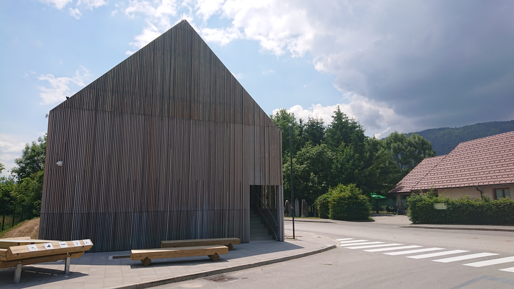
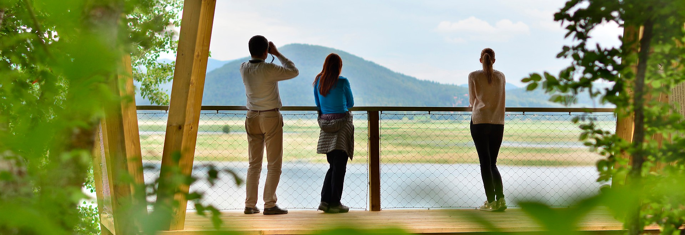
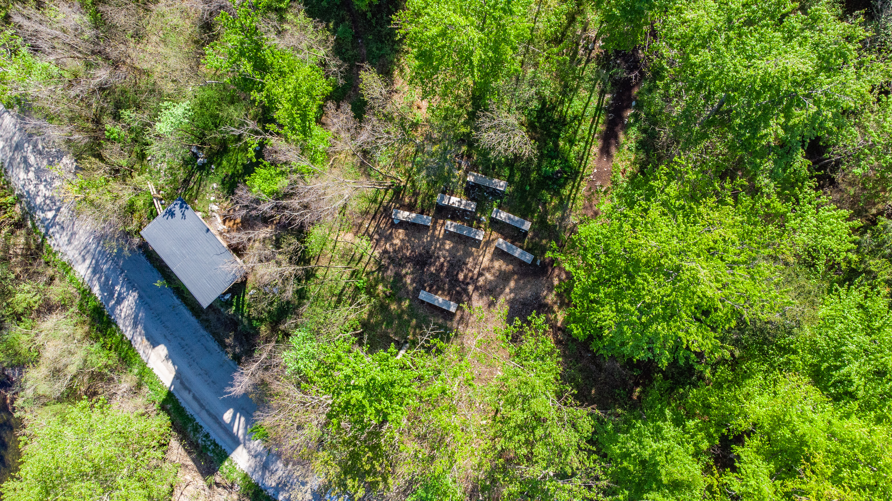
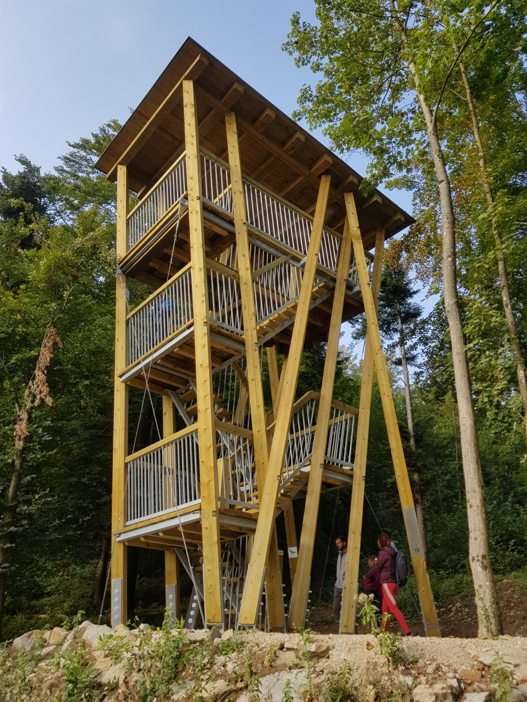
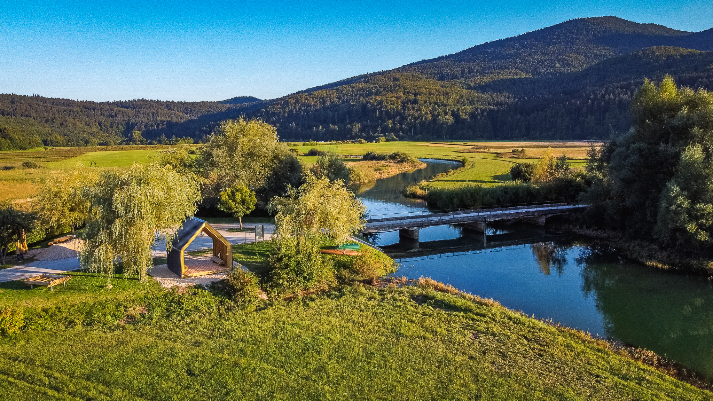
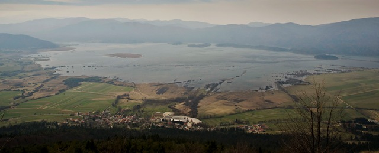
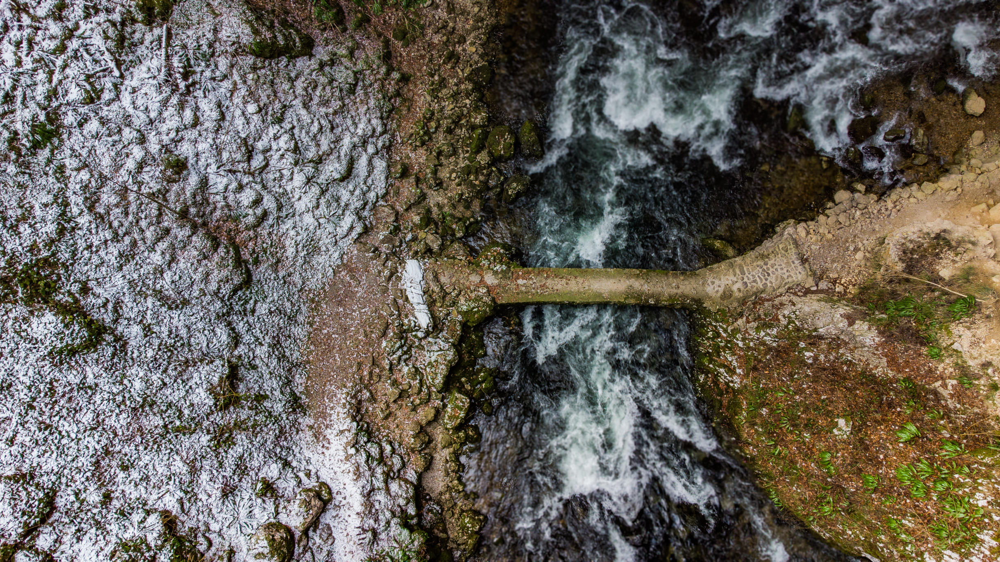
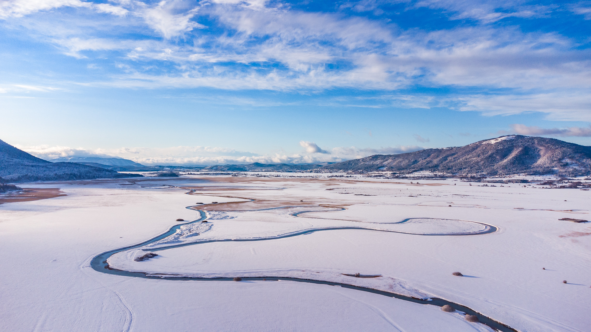

<!doctype html>
<html lang="en">
    <head>
        <meta charset="utf-8">
        <meta http-equiv="X-UA-Compatible" content="IE=edge">
        <meta name="viewport" content="initial-scale=1,user-scalable=no,maximum-scale=1,width=device-width">
        <meta name="mobile-web-app-capable" content="yes">
        <meta name="apple-mobile-web-app-capable" content="yes">
        <link rel="stylesheet" href="css/leaflet.css"><link rel="stylesheet" href="css/L.Control.Locate.min.css">
        <link rel="stylesheet" href="css/qgis2web.css"><link rel="stylesheet" href="css/fontawesome-all.min.css">
        <link rel="stylesheet" href="css/leaflet-measure.css">
        <style>
        html, body, #map {
            width: 100%;
            height: 100%;
            padding: 0;
            margin: 0;
        }
        </style>
        <title>NRP Karta</title>
    </head>
    <body>
        <div id="map">
        </div>
        <script src="js/qgis2web_expressions.js"></script>
        <script src="js/leaflet.js"></script><script src="js/L.Control.Locate.min.js"></script>
        <script src="js/multi-style-layer.js"></script>
        <script src="js/leaflet.rotatedMarker.js"></script>
        <script src="js/leaflet.pattern.js"></script>
        <script src="js/leaflet-hash.js"></script>
        <script src="js/Autolinker.min.js"></script>
        <script src="js/rbush.min.js"></script>
        <script src="js/labelgun.min.js"></script>
        <script src="js/labels.js"></script>
        <script src="js/leaflet-measure.js"></script>
        <script src="data/nrp_area_1.js"></script>
        <script src="data/PohodniskePoti_2.js"></script>
        <script src="data/PohodniskePoti_3.js"></script>
        <script>
        var map = L.map('map', {
            zoomControl:true, maxZoom:24, minZoom:12
        }).setView([45.8303,14.2524], 16);
        var hash = new L.Hash(map);
        map.attributionControl.setPrefix('<a href="https://github.com/tomchadwin/qgis2web" target="_blank">qgis2web</a> &middot; <a href="https://leafletjs.com" title="A JS library for interactive maps">Leaflet</a> &middot; <a href="https://qgis.org">QGIS</a>');
        var autolinker = new Autolinker({truncate: {length: 30, location: 'smart'}});
        L.control.locate({locateOptions: {maxZoom: 19}}).addTo(map);
        var measureControl = new L.Control.Measure({
            position: 'topleft',
            primaryLengthUnit: 'meters',
            secondaryLengthUnit: 'kilometers',
            primaryAreaUnit: 'sqmeters',
            secondaryAreaUnit: 'hectares'
        });
        measureControl.addTo(map);
        document.getElementsByClassName('leaflet-control-measure-toggle')[0]
        .innerHTML = '';
        document.getElementsByClassName('leaflet-control-measure-toggle')[0]
        .className += ' fas fa-ruler';
        var bounds_group = new L.featureGroup([]);
        function setBounds() {
        }
        map.createPane('pane_OpenStreetMapmonochrome_0');
        map.getPane('pane_OpenStreetMapmonochrome_0').style.zIndex = 400;
        var layer_OpenStreetMapmonochrome_0 = L.tileLayer('http://a.tiles.wmflabs.org/bw-mapnik/{z}/{x}/{y}.png', {
            pane: 'pane_OpenStreetMapmonochrome_0',
            opacity: 0.5,
            attribution: '',
            minZoom: 12,
            maxZoom: 24,
            minNativeZoom: 12,
            maxNativeZoom: 21
        });
        layer_OpenStreetMapmonochrome_0;
        map.addLayer(layer_OpenStreetMapmonochrome_0);

        //POT1
        function pop_PohodniskePoti_2(feature, layer) {
            var popupContent = '<table>\
                    <tr>\
                        <td colspan="2">' + (feature.properties['layer'] !== null ? autolinker.link(feature.properties['layer'].toLocaleString()) : '') + '</td>\
                    </tr>\
                    <tr>\
                        <td colspan="2"><strong>Dolzina_km</strong><br />' + (feature.properties['Dolzina_km'] !== null ? autolinker.link(feature.properties['Dolzina_km'].toLocaleString()) : '') + '</td>\
                    </tr>\
                </table>';
            layer.bindPopup(popupContent, {maxHeight: 400});
        }

        function style_PohodniskePoti_2_0() {
            return {
                pane: 'pane_PohodniskePoti_2',
                opacity: 1,
                color: 'rgba(182,127,90,1.0)',
                dashArray: '5,10',
                lineCap: 'round',
                lineJoin: 'round',
                weight: 3.0,
                fillOpacity: 0,
                interactive: true,
            }
        }
        map.createPane('pane_PohodniskePoti_2');
        map.getPane('pane_PohodniskePoti_2').style.zIndex = 402;
        map.getPane('pane_PohodniskePoti_2').style['mix-blend-mode'] = 'normal';
        var layer_PohodniskePoti_2 = new L.geoJson(json_PohodniskePoti_2, {
            attribution: '',
            interactive: true,
            dataVar: 'json_PohodniskePoti_2',
            layerName: 'layer_PohodniskePoti_2',
            pane: 'pane_PohodniskePoti_2',
            onEachFeature: pop_PohodniskePoti_2,
            style: style_PohodniskePoti_2_0,
        });
        bounds_group.addLayer(layer_PohodniskePoti_2);
        map.addLayer(layer_PohodniskePoti_2);

        //POT2
        function pop_PohodniskePoti_3(feature, layer) {
            var popupContent = '<table>\
                    <tr>\
                        <td colspan="2">' + (feature.properties['layer'] !== null ? autolinker.link(feature.properties['layer'].toLocaleString()) : '') + '</td>\
                    </tr>\
                    <tr>\
                        <td colspan="2"><strong>Dolzina_km</strong><br />' + (feature.properties['Dolzina_km'] !== null ? autolinker.link(feature.properties['Dolzina_km'].toLocaleString()) : '') + '</td>\
                    </tr>\
                </table>';
            layer.bindPopup(popupContent, {maxHeight: 400});
        }

        function style_PohodniskePoti_3_0() {
            return {
                pane: 'pane_PohodniskePoti_3',
                opacity: 1,
                color: 'rgba(60,179,113,1.0)',
                dashArray: '5,10',
                lineCap: 'round',
                lineJoin: 'round',
                weight: 3.0,
                fillOpacity: 0,
                interactive: true,
            }
        }
        map.createPane('pane_PohodniskePoti_3');
        map.getPane('pane_PohodniskePoti_3').style.zIndex = 402;
        map.getPane('pane_PohodniskePoti_3').style['mix-blend-mode'] = 'normal';
        var layer_PohodniskePoti_3 = new L.geoJson(json_PohodniskePoti_3, {
            attribution: '',
            interactive: true,
            dataVar: 'json_PohodniskePoti_3',
            layerName: 'layer_PohodniskePoti_3',
            pane: 'pane_PohodniskePoti_3',
            onEachFeature: pop_PohodniskePoti_3,
            style: style_PohodniskePoti_3_0,
        });
        bounds_group.addLayer(layer_PohodniskePoti_3);
        map.addLayer(layer_PohodniskePoti_3);

        //Zeleznica
        var zeleznica = L.icon({
        iconUrl: './markers/zeleznica.png',
        iconSize: [40, 40], // size of the icon
        });
    var marker = L.marker([45.8153, 14.3131], {icon: zeleznica}).addTo(map).bindPopup("<h3>Železniška postaja Rakek</h3> <p><br>Za vozni red klikni na sliko<a href='https://potniski.sz.si/'</p></a>");

        //Parking
        var parking = L.icon({
        iconUrl: './markers/parking.png',
        iconSize: [40, 40], // size of the icon
        });
    var marker = L.marker([45.8276, 14.26468], {icon: parking}).addTo(map);
    var marker = L.marker([45.83625, 14.25597], {icon: parking}).addTo(map);
    
        //TIC 
        var greenIcon = L.icon({
        iconUrl: 'nrp-logo-rjav-brezteksta.png',
        iconSize: [30, 30], // size of the icon
        });
    var marker = L.marker([45.77273, 14.35753], {icon: greenIcon}).addTo(map).bindPopup("<h3>Turistično - informacijski center</h3> <p>Dolenje Jezero 68, 1380 Cerknica<br>mail: tic@notranjski-park.si<br> tel: 01 709 36 36<br>gsm: 031 668 223<br><br><h4>DELOVNI ČAS:</h4><b>Poletni obratovalni čas:</b><br> od 15. aprila do 30. septembra.<br>Ponedeljek: zaprto <br>Torek: 10:00 - 16:00<br>Sreda: 10:00 - 16:00<br>Četrtek: 10:00 - 16:00<br>Petek: 10:00 - 16:00<br>Sobota, nedelja, prazniki: 9:00 - 18:00<br><b>Zimski obratovalni čas:</b><br> od 1. oktobra do 14. aprila.<br>Ponedeljek: zaprto<br>Torek: 10:00 - 16:00<br>Sreda: 10:00 - 16:00<br>Četrtek: 10:00 - 16:00<br>Petek: 10:00 - 16:00<br>Sobota, nedelja, prazniki: 10:00 - 16:00<br> <a href='https://www.notranjski-park.si/pomembne-informacije' </p></a>");
    marker.bindTooltip('<div style="color: #643c00; text-shadow: -1px -1px 0 #F8F8F8, 1px -1px 0 #F8F8F8, -1px 1px 0 #F8F8F8, 1px 1px 0 #F8F8F8;font-size: 12pt; font-weight: bold; font-family: \'Montserrat\', sans-serif;"><b>TIC NRP</b>', {permanent: true, offset: [-10,-20]}).openTooltip();

        //1-izhodišče
    var NRPIcon = L.icon({
        iconUrl: 'nrp-logo-rjav-brezteksta.png',
        iconSize: [30, 30], // size of the icon
        });

    var marker = L.marker([45.82701, 14.26497], {icon: NRPIcon}).addTo(map).bindPopup("<h3>Opazovalnica Kuharca</h3> <p>Cerkniško jezero, ki je te dni sicer bolj polje, saj je voda v njem presahnila, lahko odslej opazujete tudi sede, na novih lesenih klopeh ob usmerjeni sprehajalni poti Drvošec. Ta, kot smo že večkrat zapisali, poteka od požiralnikov Rešeto do mostu v Vratih pred vasjo Otok. Večinoma poteka skozi gozd, v katerega se povzpnete pri Ribiški koči. Več lesenih klopi se nahaja na razgledni točki Ribiški kot. Druga vrsta v krog postavljenih klopi vas čaka na vzpetini Kleni vrh, ki ponuja dih jemajoč pogled na jezero in goro Slivnico nad njim..<br> <a href='https://www.notranjski-park.si/obiskovanje/aktivnosti/pohodnistvo/pot-drvosec' </p></a>");
    marker.bindTooltip('<div style="color: #643c00; text-shadow: -1px -1px 0 #F8F8F8, 1px -1px 0 #F8F8F8, -1px 1px 0 #F8F8F8, 1px 1px 0 #F8F8F8;font-size: 8pt; font-weight: bold; font-family: \'Montserrat\', sans-serif;"><b>1 - Izhodišče</b>', {permanent: true, offset: [-10,-20]}).openTooltip();

    //2-Malni
    var NRPIcon = L.icon({
        iconUrl: 'nrp-logo-rjav-brezteksta.png',
        iconSize: [30, 30], // size of the icon
        });

    var marker = L.marker([45.82226, 14.25558], {icon: NRPIcon}).addTo(map).bindPopup("<h3>Opazovalnica Klejni vrh</h3> <p>Malnšče je, po lokalnem poimenovanju njene lokacije, že peta opazovalnica za ptice v našem parku. Ta, za razliko od drugi štirih, ki stojijo na vzpetinah, stoji na ravnini, tik ob vodotoku Strženu, v kraju Gorenje Jezero. Gradbeni delavci jo postavljajo prav te dni.Namenili smo ji prostor ob mostu med Gorenjim Jezerom in Lazami, pod katerim teče Obrh, ki se po sotočju z Lipsenjščico preimenuje v Stržen. Domačini vedo povedati, da je tod nekoč stal mlin (»maln« po domače), zato je to območje znano pod imenom Malnšče.<br> <a href='https://www.notranjski-park.si/novice/ob-cerkniskem-jezeru-postavljamo-ze-peto-opazovalnico-za-ptice' </p></a>");
    marker.bindTooltip('<div style="color: #643c00; text-shadow: -1px -1px 0 #F8F8F8, 1px -1px 0 #F8F8F8, -1px 1px 0 #F8F8F8, 1px 1px 0 #F8F8F8;font-size: 8pt; font-weight: bold; font-family: \'Montserrat\', sans-serif;"><b><b>2 - Malni</b>', {permanent: true, offset: [-10,-20]}).openTooltip();

    //3-Most-Kontrolna točka
    var NRPIcon = L.icon({
        iconUrl: 'nrp-logo-rjav-brezteksta.png',
        iconSize: [30, 30], // size of the icon
        });

    var marker = L.marker([45.82796, 14.25386], {icon: NRPIcon}).addTo(map).bindPopup("<h3>Opazovalnica Otočec</h3> <p>Malnšče je, po lokalnem poimenovanju njene lokacije, že peta opazovalnica za ptice v našem parku. Ta, za razliko od drugi štirih, ki stojijo na vzpetinah, stoji na ravnini, tik ob vodotoku Strženu, v kraju Gorenje Jezero. Gradbeni delavci jo postavljajo prav te dni.Namenili smo ji prostor ob mostu med Gorenjim Jezerom in Lazami, pod katerim teče Obrh, ki se po sotočju z Lipsenjščico preimenuje v Stržen. Domačini vedo povedati, da je tod nekoč stal mlin (»maln« po domače), zato je to območje znano pod imenom Malnšče.<br> <a href='https://www.notranjski-park.si/novice/ob-cerkniskem-jezeru-postavljamo-ze-peto-opazovalnico-za-ptice' </p></a>");
    marker.bindTooltip('<div style="color: #643c00; text-shadow: -1px -1px 0 #F8F8F8, 1px -1px 0 #F8F8F8, -1px 1px 0 #F8F8F8, 1px 1px 0 #F8F8F8;font-size: 8pt; font-weight: bold; font-family: \'Montserrat\', sans-serif;"><b><b>3 - Most preko Unice</b>', {permanent: true, offset: [-10,-20]}).openTooltip();

    //4-Planina1
    var NRPIcon = L.icon({
        iconUrl: 'nrp-logo-rjav-brezteksta.png',
        iconSize: [30, 30], // size of the icon
        });

    var marker = L.marker([45.82775, 14.25005], {icon: NRPIcon}).addTo(map).bindPopup("<h3>Opazovalnica Malenšče</h3> <p>Malnšče je, po lokalnem poimenovanju njene lokacije, že peta opazovalnica za ptice v našem parku. Ta, za razliko od drugi štirih, ki stojijo na vzpetinah, stoji na ravnini, tik ob vodotoku Strženu, v kraju Gorenje Jezero. Gradbeni delavci jo postavljajo prav te dni.Namenili smo ji prostor ob mostu med Gorenjim Jezerom in Lazami, pod katerim teče Obrh, ki se po sotočju z Lipsenjščico preimenuje v Stržen. Domačini vedo povedati, da je tod nekoč stal mlin (»maln« po domače), zato je to območje znano pod imenom Malnšče.<br> <a href='https://www.notranjski-park.si/novice/ob-cerkniskem-jezeru-postavljamo-ze-peto-opazovalnico-za-ptice' </p></a>");
    marker.bindTooltip('<div style="color: #643c00; text-shadow: -1px -1px 0 #F8F8F8, 1px -1px 0 #F8F8F8, -1px 1px 0 #F8F8F8, 1px 1px 0 #F8F8F8;font-size: 8pt; font-weight: bold; font-family: \'Montserrat\', sans-serif;"><b><b>4 - Jugoslovanska carina</b>', {permanent: true, offset: [-10,-20]}).openTooltip();

    //5-meja
    var NRPIcon = L.icon({
        iconUrl: 'nrp-logo-rjav-brezteksta.png',
        iconSize: [30, 30], // size of the icon
        });

    var marker = L.marker([45.82606, 14.24823], {icon: NRPIcon}).addTo(map).bindPopup("<h3>Opazovalnica Otoški grič</h3> <p>Malnšče je, po lokalnem poimenovanju njene lokacije, že peta opazovalnica za ptice v našem parku. Ta, za razliko od drugi štirih, ki stojijo na vzpetinah, stoji na ravnini, tik ob vodotoku Strženu, v kraju Gorenje Jezero. Gradbeni delavci jo postavljajo prav te dni.Namenili smo ji prostor ob mostu med Gorenjim Jezerom in Lazami, pod katerim teče Obrh, ki se po sotočju z Lipsenjščico preimenuje v Stržen. Domačini vedo povedati, da je tod nekoč stal mlin (»maln« po domače), zato je to območje znano pod imenom Malnšče.<br> <a href='https://www.notranjski-park.si/novice/ob-cerkniskem-jezeru-postavljamo-ze-peto-opazovalnico-za-ptice' </p></a>");
    marker.bindTooltip('<div style="color: #643c00; text-shadow: -1px -1px 0 #F8F8F8, 1px -1px 0 #F8F8F8, -1px 1px 0 #F8F8F8, 1px 1px 0 #F8F8F8;font-size: 8pt; font-weight: bold; font-family: \'Montserrat\', sans-serif;"><b><b>5 - Mejni prehod</b>', {permanent: true, offset: [-10,-20]}).openTooltip();

//6-Kačja vas
    var NRPIcon = L.icon({
        iconUrl: 'nrp-logo-rjav-brezteksta.png',
        iconSize: [30, 30], // size of the icon
        });

    var marker = L.marker([45.82296, 14.24502], {icon: NRPIcon}).addTo(map).bindPopup("<h3>Opazovalnica Otoški grič</h3> <p>Malnšče je, po lokalnem poimenovanju njene lokacije, že peta opazovalnica za ptice v našem parku. Ta, za razliko od drugi štirih, ki stojijo na vzpetinah, stoji na ravnini, tik ob vodotoku Strženu, v kraju Gorenje Jezero. Gradbeni delavci jo postavljajo prav te dni.Namenili smo ji prostor ob mostu med Gorenjim Jezerom in Lazami, pod katerim teče Obrh, ki se po sotočju z Lipsenjščico preimenuje v Stržen. Domačini vedo povedati, da je tod nekoč stal mlin (»maln« po domače), zato je to območje znano pod imenom Malnšče.<br> <a href='https://www.notranjski-park.si/novice/ob-cerkniskem-jezeru-postavljamo-ze-peto-opazovalnico-za-ptice' </p></a>");
    marker.bindTooltip('<div style="color: #643c00; text-shadow: -1px -1px 0 #F8F8F8, 1px -1px 0 #F8F8F8, -1px 1px 0 #F8F8F8, 1px 1px 0 #F8F8F8;font-size: 8pt; font-weight: bold; font-family: \'Montserrat\', sans-serif;"><b><b>6 - Kačja vas</b>', {permanent: true, offset: [-10,-20]}).openTooltip();

    //7-Kačja vas
    var NRPIcon = L.icon({
        iconUrl: 'nrp-logo-rjav-brezteksta.png',
        iconSize: [30, 30], // size of the icon
        });

    var marker = L.marker([45.82260,14.24726], {icon: NRPIcon}).addTo(map).bindPopup("<h3>Opazovalnica Otoški grič</h3> <p>Malnšče je, po lokalnem poimenovanju njene lokacije, že peta opazovalnica za ptice v našem parku. Ta, za razliko od drugi štirih, ki stojijo na vzpetinah, stoji na ravnini, tik ob vodotoku Strženu, v kraju Gorenje Jezero. Gradbeni delavci jo postavljajo prav te dni.Namenili smo ji prostor ob mostu med Gorenjim Jezerom in Lazami, pod katerim teče Obrh, ki se po sotočju z Lipsenjščico preimenuje v Stržen. Domačini vedo povedati, da je tod nekoč stal mlin (»maln« po domače), zato je to območje znano pod imenom Malnšče.<br> <a href='https://www.notranjski-park.si/novice/ob-cerkniskem-jezeru-postavljamo-ze-peto-opazovalnico-za-ptice' </p></a>");
    marker.bindTooltip('<div style="color: #643c00; text-shadow: -1px -1px 0 #F8F8F8, 1px -1px 0 #F8F8F8, -1px 1px 0 #F8F8F8, 1px 1px 0 #F8F8F8;font-size: 8pt; font-weight: bold; font-family: \'Montserrat\', sans-serif;"><b><b>7 - Ravbarjev stolp in žaga</b>', {permanent: true, offset: [-10,-20]}).openTooltip();

    //Sv. Marija
    var NRPIcon = L.icon({
        
        iconSize: [30, 30], // size of the icon
        });

    var marker = L.marker([45.82260,14.24726], {icon: NRPIcon}).addTo(map).bindPopup("<h3>Opazovalnica Otoški grič</h3> <p>Malnšče je, po lokalnem poimenovanju njene lokacije, že peta opazovalnica za ptice v našem parku. Ta, za razliko od drugi štirih, ki stojijo na vzpetinah, stoji na ravnini, tik ob vodotoku Strženu, v kraju Gorenje Jezero. Gradbeni delavci jo postavljajo prav te dni.Namenili smo ji prostor ob mostu med Gorenjim Jezerom in Lazami, pod katerim teče Obrh, ki se po sotočju z Lipsenjščico preimenuje v Stržen. Domačini vedo povedati, da je tod nekoč stal mlin (»maln« po domače), zato je to območje znano pod imenom Malnšče.<br> <a href='https://www.notranjski-park.si/novice/ob-cerkniskem-jezeru-postavljamo-ze-peto-opazovalnico-za-ptice' </p></a>");
    marker.bindTooltip('<div style="color: #643c00; text-shadow: -1px -1px 0 #F8F8F8, 1px -1px 0 #F8F8F8, -1px 1px 0 #F8F8F8, 1px 1px 0 #F8F8F8;font-size: 8pt; font-weight: bold; font-family: \'Montserrat\', sans-serif;"><b><b>7 - Ravbarjev stolp in žaga</b>', {permanent: true, offset: [-10,-20]}).openTooltip();
    
    //Slivnica
    var marker = L.marker([45.83811, 14.23916])
    .addTo(map)
    .bindPopup("<h3>Grmada</h3> <p>Gora Slivnica se nahaja na vzhodni strani Cerkniškega jezera nad naseljem Cerknica. Oblo sleme se dviga od Gradišča (858 m) do najvišjega vrha Velike Slivnice (1114 m). Južna in jugozahodna pobočja so nerazčlenjena in delno porasla z listnatim in iglastim gozdom. Severna pobočja se strmo spuščajo proti dolini Cerkniščice. Travniki in pašniki se zaradi postopnega pogozdovanja in zaraščanja hitro krčijo. Z vrha hriba, ki ga sestavljata jurski dolomit in deloma zakraseli apnenec, je lep razgled na Cerkniško jezero, Notranjsko podolje in okoliške planote. Ob vznožju Slivnice je več kraških izvirov.<br> <a href='https://sl.wikipedia.org/wiki/Slivnica_(vzpetina)' </p></a>");
    
    //Rakov skocjan
    var marker = L.marker([45.791, 14.2955])
    .addTo(map)
    .bindPopup("<h3>Rakov Škocjan</h3> <p>Rakov Škocjan je kraška dolina ob severnem vznožju Javornikov, nastala z udiranjem in rušenjem stropa kraške jame. To dokazujeta 42 m visoki Mali naravni most, 37 m visoki Veliki naravni most ter soteski za njima.Po dnu ravnega ilovnatega dna vijuga potok Rak, obdan z lazi in poplavnimi travniki. Rak polnijo vode, ki se skozi podzemlje stekajo s Cerkniškega polja in izpod Javornikov. Rečica priteče na površje iz Zelških jam na vzhodni strani doline, ponikne pa v Tkalca jami na zahodnem delu.Skupaj s Cerkniškim jezerom in Križno jamo je Rakov Škocjan razglašen za mednarodno pomembno mokrišče - Ramsarsko območje. Dolina je tudi prvi slovenski krajinski park, ustanovljen že leta 1949. Po dolini je, kot se za tako naravno znamenitost spodobi, speljana tudi naravoslovna učna pot.<br> <a href='https://www.notranjski-park.si/narava/naravne-znamenitosti/rakov-skocjan' </p></a>");

    //Rakov skocjan
    var marker = L.marker([45.791, 14.2955])
    .addTo(map)
    .bindPopup("<h3>Rakov Škocjan</h3> <p>Rakov Škocjan je kraška dolina ob severnem vznožju Javornikov, nastala z udiranjem in rušenjem stropa kraške jame. To dokazujeta 42 m visoki Mali naravni most, 37 m visoki Veliki naravni most ter soteski za njima.Po dnu ravnega ilovnatega dna vijuga potok Rak, obdan z lazi in poplavnimi travniki. Rak polnijo vode, ki se skozi podzemlje stekajo s Cerkniškega polja in izpod Javornikov. Rečica priteče na površje iz Zelških jam na vzhodni strani doline, ponikne pa v Tkalca jami na zahodnem delu.Skupaj s Cerkniškim jezerom in Križno jamo je Rakov Škocjan razglašen za mednarodno pomembno mokrišče - Ramsarsko območje. Dolina je tudi prvi slovenski krajinski park, ustanovljen že leta 1949. Po dolini je, kot se za tako naravno znamenitost spodobi, speljana tudi naravoslovna učna pot.<br> <a href='https://www.notranjski-park.si/narava/naravne-znamenitosti/rakov-skocjan' </p></a>");
    //Spicka
    var marker = L.marker([45.8353, 14.3969])
    .addTo(map)
    .bindPopup("<h3>Špičasto Stražišče (Špička)</h3> <p>Res ni težko ugotoviti, zakaj se vrh severno od Begunj imenuje »Špička«. Že od daleč namreč lahko vidimo, kako se zašiljeno dviga z Meniševske planote. Poti na Špičko je več, markirana vodi iz Begunj, vrh pa ponuja lep razgled na Slivnico in okoliške hribe ter vasi.<br> <a href='https://www.notranjski-park.si/obiskovanje/aktivnosti/pohodnistvo/spicasto-strazisce-spicka' </p></a>");

    //Rakov skocjan
    var marker = L.marker([45.791, 14.2955])
    .addTo(map)
    .bindPopup("<h3>Rakov Škocjan</h3> <p>Rakov Škocjan je kraška dolina ob severnem vznožju Javornikov, nastala z udiranjem in rušenjem stropa kraške jame. To dokazujeta 42 m visoki Mali naravni most, 37 m visoki Veliki naravni most ter soteski za njima.Po dnu ravnega ilovnatega dna vijuga potok Rak, obdan z lazi in poplavnimi travniki. Rak polnijo vode, ki se skozi podzemlje stekajo s Cerkniškega polja in izpod Javornikov. Rečica priteče na površje iz Zelških jam na vzhodni strani doline, ponikne pa v Tkalca jami na zahodnem delu.Skupaj s Cerkniškim jezerom in Križno jamo je Rakov Škocjan razglašen za mednarodno pomembno mokrišče - Ramsarsko območje. Dolina je tudi prvi slovenski krajinski park, ustanovljen že leta 1949. Po dolini je, kot se za tako naravno znamenitost spodobi, speljana tudi naravoslovna učna pot.<br> <a href='https://www.notranjski-park.si/narava/naravne-znamenitosti/rakov-skocjan' </p></a>");
    
    //Strzen
    var marker = L.marker([45.7476, 14.3846])
    .addTo(map)
    .bindPopup("<h3>Okljuki stržena</h3> <p>Med letoma 1844 in 1958 je namreč človek 14 kilometrov strug Stržena, Goriškega Brežička, Lipsenjščice, Tresenca in Žerovniščine, ki so prej meandrirale, izravnal v kanale za hitro odtekanje vode. Tako se je njihova dolžina za trikrat zmanjšala, to pa pomeni, da se v Cerkniškem jezeru zadržuje manj vode. Danes so negativne posledice, tudi zaradi podnebnih sprememb, ki vplivajo na bolj sušna poletja, vse bolj vidne. Jezero ne presiha več samo enkrat na tri ali štiri leta, temveč tudi trikrat letno. Izvedena renaturacija bo imela pozitivne učinke na vodno dinamiko presihajočega jezera ter rastlinske in živalske združbe. Z obnovo struge bo povečan habitat bobnarice, z vzpostavitvijo mirne cone pa bodo razmere za njeno uspešno gnezdenje še izboljšane..<br> <a href='https://www.kras.notranjski-park.si/novice-in-dogodki/zakaj-obnavljamo-potok-strzen/' </p></a>");
        </script>
    </body>
</html>
